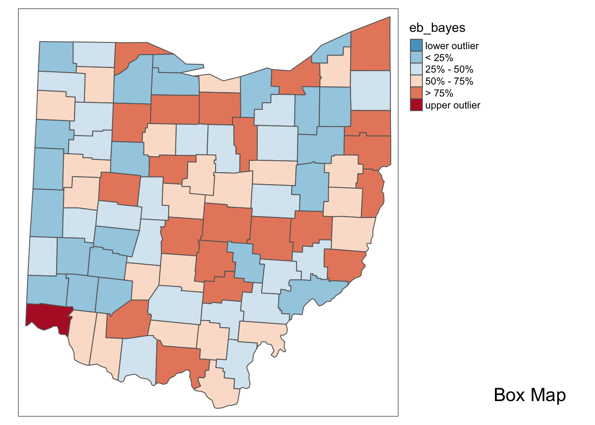

Chapter 5 Rate Mapping
Introduction
This notebook covers the functionality of the Rate Mapping section of the GeoDa workbook. We refer to that document for details on the methodology, references, etc. The goal of these notes is to approximate as closely as possible the operations carried out using GeoDa by means of a range of R packages.
The notes are written with R beginners in mind, more seasoned R users can probably skip most of the comments on data structures and other R particulars. Also, as always in R, there are typically several ways to achieve a specific objective, so what is shown here is just one way that works, but there often are others (that may even be more elegant, work faster, or scale better).
For this notebook, we use Cleveland house price data. Our goal in this lab is show how to assign spatial weights based on different distance functions.
5.0.1 Objectives
After completing the notebook, you should know how to carry out the following tasks:
Obtain a coordinate reference system
Create thematic maps for rates
Assess extreme value rate values by means of an excess risk map
Understand the principle behind shrinkage estimation or smoothing rates
Use base R to compute rates with bivariate operations
5.0.1.1 R Packages used
sf: To read in the shapefile.
tmap: To create various rate maps and build up the necessary custom specifications for the box map classification
geodaData: To load the dataset for the notebook.
5.0.1.2 R Commands used
Below follows a list of the commands used in this notebook. For further details and a comprehensive list of options, please consult the R documentation.
Base R:
install.packages,library,setwd,class,str,sf:
plot,st_crs,st_set_geometrytmap:
tm_shape,tm_fill,tm_borders,tm_layout,tmap_mode,tm_basemap
5.1 Preliminaries
5.1.1 Load packages
First, we load all the required packages using the library command. If you don’t have some of these in your system, make sure to install them first as well as
their dependencies.18 You will get an error message if something is missing. If needed, just install the missing piece and everything will work after that.
5.1.2 geodaData
All of the data for the R notebooks is available in the geodaData
package. We loaded the library earlier, now to access the individual
data sets, we use the double colon notation. This works similar to
to accessing a variable with $, in that a drop down menu will
appear with a list of the datasets included in the package. For this
notebook, we use ohio_lung.
5.2 Choropleth Map for Rates
5.2.1 Spatially extensive and intensive variables
We start our discussion of rate maps by illustrating something we should not be doing. This pertains to the important difference between a spatially extensive and a spatially intensive variable. In many applications that use public health data, we typically have access to a count of events, such as the number of cancer cases (a spatially extensive variable), as well as to the relevant population at risk, which allows for the calculation of a rate (a spatially intensive variable).
5.2.1.1 Setting up the Boxmap option
Throughout this notebook, we will be using the boxmap function, created in the
previous notebook: Basic Mapping. We won’t go into depth on how the function was created,
but for this information, check out the Basic Mapping notebook chapter.
get.var <- function(vname,df) {
# function to extract a variable as a vector out of an sf data frame
# arguments:
# vname: variable name (as character, in quotes)
# df: name of sf data frame
# returns:
# v: vector with values (without a column name)
v <- df[vname] %>% st_set_geometry(NULL)
v <- unname(v[,1])
return(v)
}boxbreaks <- function(v,mult=1.5) {
# break points for box map
# arguments:
# v: vector with observations
# mult: multiplier for IQR (default 1.5)
# returns:
# bb: vector with 7 break points
# compute quartile and fences
qv <- unname(quantile(v))
iqr <- qv[4] - qv[2]
upfence <- qv[4] + mult * iqr
lofence <- qv[2] - mult * iqr
# initialize break points vector
bb <- vector(mode="numeric",length=7)
# logic for lower and upper fences
if (lofence < qv[1]) { # no lower outliers
bb[1] <- lofence
bb[2] <- qv[1]
} else {
bb[2] <- lofence
bb[1] <- qv[1]
}
if (upfence > qv[5]) { # no upper outliers
bb[7] <- upfence
bb[6] <- qv[5]
} else {
bb[6] <- upfence
bb[7] <- qv[5]
}
bb[3:5] <- qv[2:4]
return(bb)
}boxmap <- function(vnam,df,legtitle=NA,mtitle="Box Map",mult=1.5){
# box map
# arguments:
# vnam: variable name (as character, in quotes)
# df: simple features polygon layer
# legtitle: legend title
# mtitle: map title
# mult: multiplier for IQR
# returns:
# a tmap-element (plots a map)
var <- get.var(vnam,df)
bb <- boxbreaks(var)
tm_shape(df) +
tm_fill(vnam,title=legtitle,breaks=bb,palette="-RdBu",
labels = c("lower outlier", "< 25%", "25% - 50%", "50% - 75%","> 75%", "upper outlier")) +
tm_borders() +
tm_layout(title = mtitle, title.position = c("right","bottom"),legend.outside = TRUE, legend.outside.position = "right")
}## tmap mode set to interactive viewing## old-style crs object detected; please recreate object with a recent sf::st_crs()## old-style crs object detected; please recreate object with a recent sf::st_crs()
## old-style crs object detected; please recreate object with a recent sf::st_crs()
## old-style crs object detected; please recreate object with a recent sf::st_crs()
## old-style crs object detected; please recreate object with a recent sf::st_crs()Anyone familiar with the geography of Ohio will recognize the outliers as the counties with the largest populations, i.e., the metropolitan areas of Cincinnati, Columbus, Cleveland, etc. The labels for these cities in the base layer make this clear. This highlights a major problem with spatially extensive variables like total counts, in that they tend to vary with the size (population) of the areal units. So, everything else being the same, we would expect to have more lung cancer cases in counties with larger populations
Instead, we opt for a spatially intensive variable, such as the ratio of the number of cases over the population. More formally, if \(O_i\) is the number of cancer cases in area i, and \(P_i\) is the corresponding population at risk (in our example, the total number of white females), then the raw or crude rate or proportion follows as:
\[r_i = \frac{O_i}{P_i}\]
5.2.1.2 Variance instability
The crude rate is an estimator for the unknown underlying risk. In our example, that would be the risk of a white woman to be exposed to lung cancer. The crude rate is an unbiased estimator for the risk, which is a desirable property. However, its variance has an undesirable property, namely
\[Var[r_i] = \frac{\pi_i(1-\pi_i)}{P_i}\] where \(\pi_i\) is the underlying risk in area i. This implies that the larger the population of an area (\(P_i\) in the denominator), the smaller the variance for the estimator, or, in other words, the greater the precision.
The flip side of this result is that for areas with sparse populations (small \(P_i\)), the estimate for the risk will be imprecise (large variance). Moreover, since the population typically varies across the areas under consideration, the precision of each rate will vary as well. This variance instability needs to somehow be reflected in the map, or corrected for, to avoid a spurious representation of the spatial distribution of the underlying risk. This is the main motivation for smoothing rates, to which we return below.
5.2.2 Raw rate map
To compute the raw rate, we just divide the count of events by the population for each county.
We don’t need the basemap for the rest of the notebook, so we switch back to plot
mode in tmap. This is done with tmap_mode plot. Using the boxmap function
from earlier we make a map of the lung cancer counts and the raw population based
rates.
## tmap mode set to plotting## old-style crs object detected; please recreate object with a recent sf::st_crs()## old-style crs object detected; please recreate object with a recent sf::st_crs()
## old-style crs object detected; please recreate object with a recent sf::st_crs()
## old-style crs object detected; please recreate object with a recent sf::st_crs()
## old-style crs object detected; please recreate object with a recent sf::st_crs()
With tmap_arrange, we can get a side by side comparison of the two maps.
## old-style crs object detected; please recreate object with a recent sf::st_crs()
## old-style crs object detected; please recreate object with a recent sf::st_crs()
## old-style crs object detected; please recreate object with a recent sf::st_crs()
## old-style crs object detected; please recreate object with a recent sf::st_crs()
## old-style crs object detected; please recreate object with a recent sf::st_crs()
## old-style crs object detected; please recreate object with a recent sf::st_crs()
## old-style crs object detected; please recreate object with a recent sf::st_crs()
## old-style crs object detected; please recreate object with a recent sf::st_crs()
## old-style crs object detected; please recreate object with a recent sf::st_crs()
## old-style crs object detected; please recreate object with a recent sf::st_crs()
With the adjustment for population, the map becomes more meaningful than just the raw count data. We see different upper outliers and a new spatial distribution after this adjustment.
5.3 Excess risk
5.3.1 Relative risk
A commonly used notion in demography and public health analysis is the concept of a standardized mortality rate (SMR), sometimes also referred to as relative risk or excess risk. The idea is to compare the observed mortality rate to a national (or regional) standard. More specifically, the observed number of events is compared to the number of events that would be expected had a reference risk been applied.
In most applications, the reference risk is estimated from the aggregate of all the observations under consideration. For example, if we considered all the counties in Ohio, the reference rate would be the sum of all the events over the sum of all the populations at risk. Note that this average is not the average of the county rates. Instead, it is calculated as the ratio of the total sum of all events over the total sum of all populations at risk (e.g., in our example, all the white female deaths in the state over the state white female population). Formally, this is expressed as:
\[\pi=\frac{\Sigma_{i=1}^{i=n}O_i}{\Sigma_{i=1}^{i=n}P_i}\]
which yields the expected number of events for each area i as:
\[E_i=\pi*P_i\]
The relative risk then follows as the ratio of the observed number of events (e.g., cancer cases) over the expected number:
\[SMR_i=\frac{O_i}{E_i}\]
5.3.2 Excess risk map
To calculate the excess risk of each county, we need to do a series of computations first as opposed to GeoDa, which does it automatically. We start by calculating the reference rate, which is just the sum of events over the sum of the population.
sum_observed <- sum(ohio_lung$LFW68)
sum_population <- sum(ohio_lung$POPFW68)
p_i <- sum_observed / sum_populationNext we calculate the expected number of events for each county based on the reference rate for the whole state and the population for each county.
Lasty, we divide the actual count by the expected count to get the relative risk rate. This ratio will show us which counties have a higher than expected number of lung cancer cases, and which counties have a lower than expected count.
In the excess risk map, blue counties will indicate a risk lower than the state average, or \(SMR_i < 1\). Red counties indicate a risk higher than the state average, or \(SMR_i > 1\).
p1 <- tm_shape(ohio_lung) +
tm_fill("smr",title="Excess risk",breaks=c(-100,.25,.5,1,2,4,1000),labels = c("<.25", ".25 - .50", ".50 - 1.00","1.00 - 2.00", "2.00 - 4.00", "> 4.00" ), palette = "-RdBu") +
tm_borders() +
tm_layout(legend.outside = TRUE, legend.outside.position = "right")
p1## old-style crs object detected; please recreate object with a recent sf::st_crs()
## old-style crs object detected; please recreate object with a recent sf::st_crs()
## old-style crs object detected; please recreate object with a recent sf::st_crs()
## old-style crs object detected; please recreate object with a recent sf::st_crs()
## old-style crs object detected; please recreate object with a recent sf::st_crs()
Additionally, we can examine the excess risk rate in the form of a boxmap. The boxmap utilizes the full distribution of the rates to identify outliers, compared to the relative risk map, which identifies them as having a value greater than two.
## old-style crs object detected; please recreate object with a recent sf::st_crs()
## old-style crs object detected; please recreate object with a recent sf::st_crs()
## old-style crs object detected; please recreate object with a recent sf::st_crs()
## old-style crs object detected; please recreate object with a recent sf::st_crs()
## old-style crs object detected; please recreate object with a recent sf::st_crs()
Here we use tmap_arrange to get a side by side comparison again.
## old-style crs object detected; please recreate object with a recent sf::st_crs()
## old-style crs object detected; please recreate object with a recent sf::st_crs()
## old-style crs object detected; please recreate object with a recent sf::st_crs()
## old-style crs object detected; please recreate object with a recent sf::st_crs()
## old-style crs object detected; please recreate object with a recent sf::st_crs()
## old-style crs object detected; please recreate object with a recent sf::st_crs()
## old-style crs object detected; please recreate object with a recent sf::st_crs()
## old-style crs object detected; please recreate object with a recent sf::st_crs()
## old-style crs object detected; please recreate object with a recent sf::st_crs()
## old-style crs object detected; please recreate object with a recent sf::st_crs()
5.4 Empirical Bayes Smoothed Rate Map
5.4.1 Borrowing strength
As mentioned in the introduction, rates have an intrinsic variance instability, which may lead to the identification of spurious outliers. In order to correct for this, we can use smoothing approaches (also called shrinkage estimators), which improve on the precision of the crude rate by borrowing strength from the other observations. This idea goes back to the fundamental contributions of James and Stein (the so-called James-Stein paradox), who showed that in some instances biased estimators may have better precision in a mean squared error sense.
GeoDa includes three methods to smooth the rates: an Empirical Bayes approach, a spatial averaging approach, and a combination between the two. We will consider the spatial approaches after we discuss distance-based spatial weights. Here, we focus on the Empirical Bayes (EB) method. First, we provide some formal background on the principles behind smoothing and shrinkage estimators.
5.4.2 Bayes law
The formal logic behind the idea of smoothing is situated in a Bayesian framework, in which the distribution of a random variable is updated after observing data. The principle behind this is the so-called Bayes Law, which follows from the decomposition of a joint probability (or density) into two conditional probabilities:
\[P[AB] = P[A|B]*P[B] = P[B|A]*P[A]\]
where A and B are random events, and | stands for the conditional probability of one event, given a value for the other. The second equality yields the formal expression of Bayes law as:
\[P[A|B] = \frac{P[B|A]*P[A]}{P[B]}\] In most instances in practice, the denominator in this expression can be ignored, and the equality sign is replaced by a proportionality sign:
\[P[A|B]\propto P[B|A]*P[A]\]
\[P[\pi|y]\propto P[Y|\pi] * P[\pi]\]
5.4.3 The Poisson-Gamma model
For each particular estimation problem, we need to specify distributions for the prior and the likelihood in such a way that a proper posterior distribution results. In the context of rate estimation, the standard approach is to specify a Poisson distribution for the observed count of events (conditional upon the risk parameter), and a Gamma distribution for the prior of the risk parameter \(\pi\). This is referred to as the Poisson-Gamma model.
In this model, the prior distribution for the (unknown) risk parameter \(\pi\) is \(Gamma(\alpha,\beta)\), where \(\alpha\) and \(\beta\) are the shape and scale parameters of the Gamma distribution. In terms of the more familiar notions of mean and variance, this implies:
\[E[\pi] = \alpha/\beta\] and
\[Var[\pi] = \alpha/\beta^2\]
Using standard Bayesian principles, the combination of a Gamma prior for the risk parameter with a Poisson distribution for the count of events (O) yields the posterior distribution as \(Gamma(O+\alpha,P + \beta)\). The new shape and scale parameters yield the mean and variance of the posterior distribution for the risk parameter as:
\[E[\pi]= \frac{O+ \alpha}{P + \beta}\]
and
\[Var[\pi] = \frac{O + \alpha}{(P+\beta)^2}\]
Different values for the \(\alpha\) and \(\beta\) parameters (reflecting more or less precise prior information) will yield smoothed rate estimates from the posterior distribution. In other words, the new risk estimate adjusts the crude rate with parameters from the prior Gamma distribution.
5.4.4 The Empirical Bayes approach
In the Empirical Bayes approach, values for \(\alpha\) and \(\beta\) of the prior Gamma distribution are estimated from the actual data. The smoothed rate is then expressed as a weighted average of the crude rate, say r, and the prior estimate, say \(\theta\). The latter is estimated as a reference rate, typically the overall statewide average or some other standard.
In essense, the EB technique consists of computing a weighted average between the raw rate for each county and the state average, with weights proportional to the underlying population at risk. Simply put, small counties (i.e., with a small population at risk) will tend to have their rates adjusted considerably, whereas for larger counties the rates will barely change.
More formally, the EB estimate for the risk in location i is: \[\pi_i^{EB}=w_ir_i + (1-w_i)\theta\]
In this expression, the weights are:
\[w_i = \frac{\sigma^2}{(\sigma^2 + \mu/P_i)}\]
with \(P_i\) as the population at risk in area i, and \(\mu\) and \(\sigma^2\) as the mean and variance of the prior distribution.
In the empirical Bayes approach, the mean \(\mu\) and variance \(\sigma^2\) of the prior (which determine the scale and shape parameters of the Gamma distribution) are estimated from the data.
For \(\mu\) this estimate is simply the reference rate(the same reference used in the computation of SMR), \(\Sigma_{i=1}^{i=n}O_i/\Sigma_{i=1}^{i=n}P_i\). The estimate of the variance is a bit more complex:
\[\sigma^2=\frac{\Sigma_{i=1}^{i=n}P_i(r_i-\mu)^2}{\Sigma_{i=1}^{i=n}P_i}-\frac{\mu}{\Sigma_{i=1}^{i=n}P_i/n}\]
While easy to calculate, the estimate for the variance can yield negative values. In such instances, the conventional approach is to set \(\sigma^2\) to zero. As a result, the weight \(w_i\) becomes zero, which in essence equates the smoothed rate estimate to the reference rate.
5.5 EB rate map
We start by computing all of the necessary parameters for the variance formula above. This includes \(\mu\), n , the crude rate, \(r_i\), \(O_i\), and \(P_i\).
mu <- sum(ohio_lung$LFW68) / sum(ohio_lung$POPFW68)
O_i <- ohio_lung$LFW68
P_i <- ohio_lung$POPFW68
n <- length(ohio_lung$POPFW68)
r_i <- O_i / P_iNext we compute the variance, to similify the code, we compute the top left portion or \[\Sigma_{i=1}^{i=n}P_i(r_i-\mu)^2\] as top_left, then compute the variance with the next line.
Now that we have the variance, we can compute the \(w_i\) values.
Here we use the final formula for the smoothed rates.
## [1] 1.150783e-04 1.065711e-04 1.079228e-04 1.029445e-04 1.169062e-04
## [6] 1.025309e-04 9.454283e-05 1.038335e-04 9.849086e-05 1.064611e-04
## [11] 1.109825e-04 1.096707e-04 1.058050e-04 1.009664e-04 9.588061e-05
## [16] 1.166735e-04 1.048742e-04 1.143876e-04 1.091126e-04 1.175319e-04
## [21] 1.069775e-04 1.191585e-04 1.176190e-04 1.068460e-04 1.069400e-04
## [26] 1.071089e-04 1.036440e-04 1.119544e-04 9.280937e-05 1.153709e-04
## [31] 1.071074e-04 1.035920e-04 1.026519e-04 1.086969e-04 1.123365e-04
## [36] 1.143454e-04 1.087786e-04 1.084304e-04 1.023274e-04 1.243397e-04
## [41] 1.114789e-04 1.228748e-04 1.050183e-04 1.089482e-04 1.063903e-04
## [46] 1.115513e-04 1.095161e-04 1.037763e-04 1.128505e-04 1.070939e-04
## [51] 1.158590e-04 1.074788e-04 1.082377e-04 1.179104e-04 1.167411e-04
## [56] 1.044656e-04 1.010171e-04 1.071996e-04 1.157866e-04 1.041863e-04
## [61] 9.693106e-05 1.063645e-04 1.130748e-04 1.027615e-04 1.122900e-04
## [66] 1.070648e-04 1.113361e-04 1.156885e-04 1.024824e-04 1.015521e-04
## [71] 1.021452e-04 1.035587e-04 1.064004e-04 1.055062e-04 1.074256e-04
## [76] 1.208589e-04 1.339407e-04 1.122428e-04 1.113038e-04 1.107139e-04
## [81] 1.089123e-04 1.090464e-04 1.058359e-04 1.048680e-04 1.176496e-04
## [86] 1.124378e-04 1.147444e-04 9.951653e-05Lastly, we plot the EB smoothed rates with the boxmap function.
## old-style crs object detected; please recreate object with a recent sf::st_crs()
## old-style crs object detected; please recreate object with a recent sf::st_crs()
## old-style crs object detected; please recreate object with a recent sf::st_crs()
## old-style crs object detected; please recreate object with a recent sf::st_crs()
## old-style crs object detected; please recreate object with a recent sf::st_crs()
In comparison to the box map for the crude rates and the excess rate map, none of the original outliers remain identified as such in the smoothed map. Instead, a new outlier is shown in the very southwestern corner of the state (Hamilton county).
Since many of the original outlier counties have small populations at risk (check in the data table), their EB smoothed rates are quite different (lower) from the original. In contrast, Hamilton county is one of the most populous counties (it contains the city of Cincinnati), so that its raw rate is barely adjusted. Because of that, it percolates to the top of the distribution and becomes an outlier.
Use
install.packages(packagename).↩︎